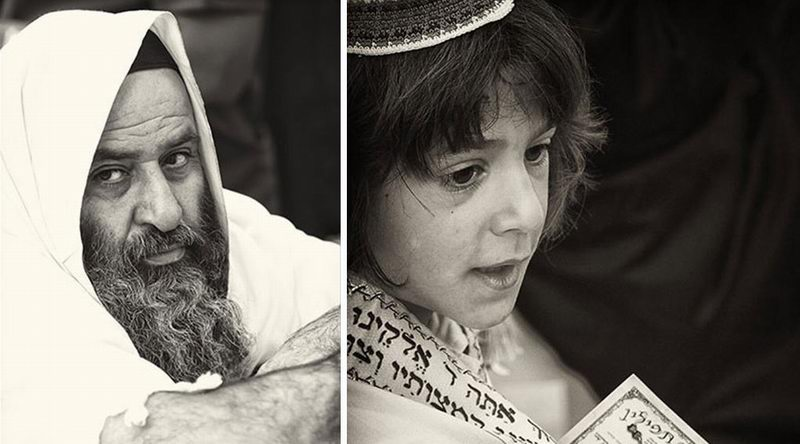
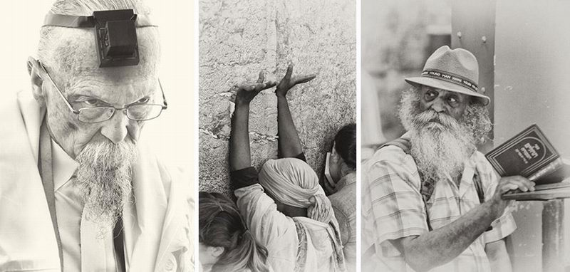
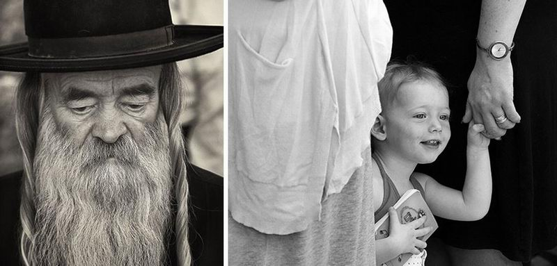
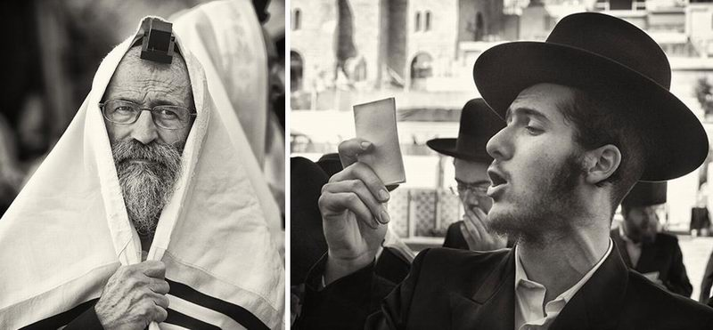
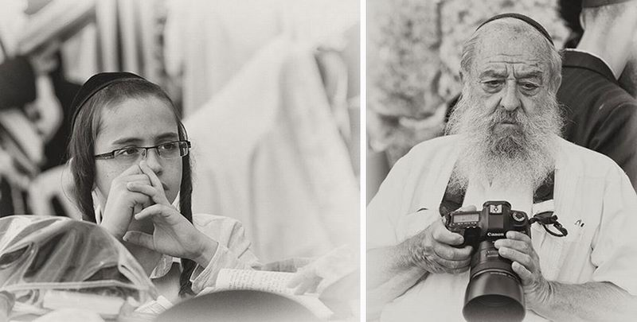
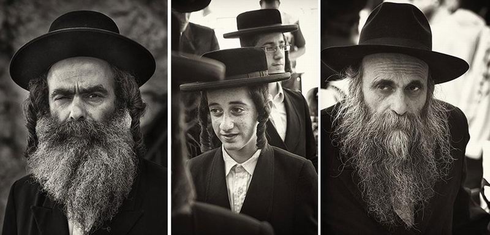
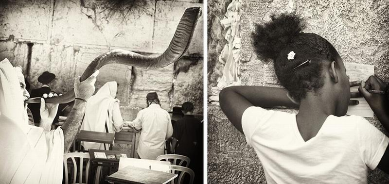

Праздники в Библии · Библия и художник
ОДИН ЧАС СУДНОГО ДНЯ в черно-белых тонах
Все фотографии этой истории сделаны в Судный день, за несколько часов до его начала. Все они сделаны в одном месте – в Иерусалиме у Стены плача и в одно время – в течение часа во время утренней молитвы.
Один час Судного дня в черно-белых тонах. Фотозаметки Дмитрия Брикмана
автор: Дмитрий Брикман
Фото: Дмитрий Брикман
Мы живем в мире условных рефлексов. Рождаются одни, исчезают другие. Новые времена и новые технологии приносят новые рефлексы и убивают рефлексы старые. Эффект собаки Павлова никто не отменял. Не знаю как у вас, а у меня, когда на каком-нибудь новостном интернет-сайте среди десятков цветных и ярких фотографий я вдруг вижу черно-белый портрет, в голове отчетливо проносится слово "некролог". Иногда, к счастью, ошибочно, но чаще всего… У черно-белого портрета, в отличие от цветного, есть одна удивительная особенность: можно в спокойствии вглядеться в главное, в то, что не врет – в глаза человека. Цветовые детали прикрывают, маскируют, растушевывают. Отсутствие цвета обнажает суть.
По-видимому, эта особенность монохромного изображения и была той причиной, по которой люди выбрали его для некролога. Не знаю, сознательно они это сделали или нет, но, наверное, это правильно – дать возможность в последний раз без суеты и ненужных деталей взглянуть в глаза человека, который ушел.

Есть в иудейской традиции один очень важный день. По крайней мере, для меня. По какой-то странной причине его причисляют к праздникам. Возможно, просто слова другого не нашли. Йом Кипур. Судный день.

Если отбросить весь цветовой антураж этого дня типа белых одежд, оперного исполнения "Кол Нидрей" в центральной синагоге, мечты о первой тарелке супа с третьей звездой во время суточного поста и автоматически раздаваемых направо и налево "прости" и пожеланий удачной подписи, то остается главное.

Остается тот самый вопрос, который когда-то задал мне восьмилетний мальчик: "Зачем человек рождается и почему умирает?" Простой черно-белый вопрос, намертво погребенный под грудой цветных и маловажных деталей.

Все фотографии этой истории сделаны в Судный день, за несколько часов до его начала. Все они сделаны в одном месте – в Иерусалиме у Стены плача и в одно время – в течение часа во время утренней молитвы. Если уж быть совсем точным – в течение одного часа и четырех минут.

Цифровая камера врать не умеет. И все они черно-белые. Обычно максимум одна-две фотографии из сессии оказываются достойными того, чтобы стать черно-белыми. В этот раз оказались практически все. Почему? Мне кажется, Иерусалим всегда сам решает, какой стороной приоткрыть себя людям. Если вообще решает приоткрыться…

И последнее – почему, вопреки всем законам новостных сайтов, эта история появилась не сразу после события, а спустя длительное время, когда уже, как принято теперь говорить, прошел информационный повод и пропала актуальность. Тут все просто. Если отбросить весь цветовой, суетный и часто совершенно неважный антураж нашей жизни, то останется тот самый черно-белый вопрос восьмилетнего мальчика, актуальность которого не исчезает ни по каким законам и тем более по законам новостных сайтов.

Только мы, почему-то, упорно не хотим над ним задумываться.
***
см. также другие работы Дмитрия Брикмана